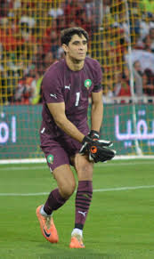
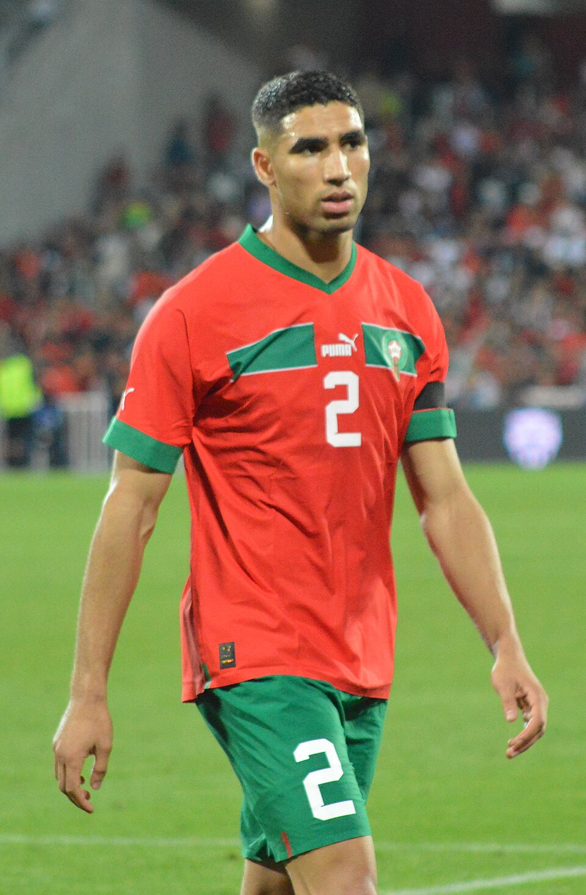
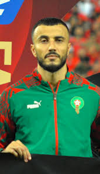
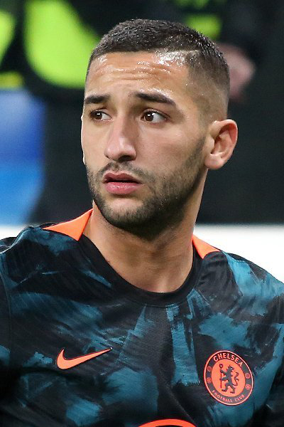

| Yassine Bounou |
Portero |
34 |
Yassine "Bono" Bounou (Montreal, Canadá, 5 de abril de 1991) es un portero marroquí que juega en el Al-Hilal de Arabia Saudita. |
 |
| Achraf Hakimi |
Lateral derecho |
26 |
Achraf Hakimi (Madrid, 4 de noviembre de 1998) es un lateral marroquí que juega en el París Saint-Germain. |
 |
| Romain Saïss |
Defensa central |
35 |
Romain Saïss (Bourg-de-Péage, Francia, 26 de marzo de 1990) es un defensa marroquí que juega en el Al-Shabab de Arabia Saudita. |
 |
| Sofyan Amrabat |
Mediocampista |
29 |
Sofyan Amrabat (Huizen, Países Bajos, 21 de agosto de 1996) es un mediocampista marroquí que juega en el Manchester United. |
 |
| Hakim Ziyech |
Extremo |
32 |
Hakim Ziyech (Dronten, Países Bajos, 19 de marzo de 1993) es un extremo marroquí que juega en el Galatasaray. |
 |
| Youssef En-Nesyri |
Delantero |
28 |
Youssef En-Nesyri (Fez, Marruecos, 1 de junio de 1997) es un delantero marroquí que juega en el Sevilla FC. |
 |